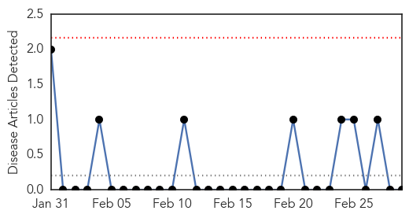

Measles
30-Day Web Trend
5 alerts, 6 warnings

30-Day Twitter Trend
0 alerts, 0 warnings

Article Locations

Article Confidences

Top Articles:
- 0.997
- The measles outbreak and vaccines
- 0.977
- Youngstown News, Unvaccinated U.S. travelers
- 0.976
- Snohomish County has close call with measles-infected visitor
- 0.976
- Sweden confirms measles case --China Economic Net
- 0.974
- Sweden confirms measles case
- 0.936
- Outcomes contradict vaccination opponents
- 0.931
- German toddler dies in measles outbreak
- 0.901
- Why are we still debating vaccines?
- 0.870
- Doubts over vaccine safety persist
- 0.853
- What Happens In Vegas Stays In Vegas, But What If It’s Measles?
- 0.850
- Many Central Coast schools vulnerable to measles outbreaks
- 0.841
- Dana Hills High School
- 0.823
- WBTV 3 News, Weather, Sports, and Traffic for Charlotte, NC
- 0.756
- Measles PSA urges vaccines
- 0.714
- Agencies work to increase childhood vaccination rates
- 0.713
- Vaccines Recommended to Protect Against Measles
- 0.614
- How's your school rank? A new look as state lists percentage of school measles exemptions -- Port Angeles Port Townsend Sequim Forks Jefferson County Clallam County Olympic Peninsula Daily NEWS
- 0.580
- Oregon reconsiders vaccine rules
- 0.565
- Oregon to Consider Banning Exemptions for Vaccines
- 0.523
- Victim of success? Data shows vaccine exemptions rising in region
Top Tweets:
-
No tweets found for Mar 01, 2015
Bubonic Plague
30-Day Web Trend
0 alerts, 0 warnings

30-Day Twitter Trend
0 alerts, 0 warnings

Article Locations

Article Confidences

Top Articles:
-
No articles found for Mar 01, 2015
Top Tweets:
-
No tweets found for Mar 01, 2015